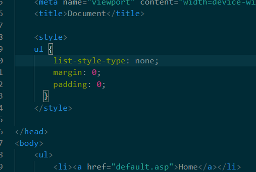
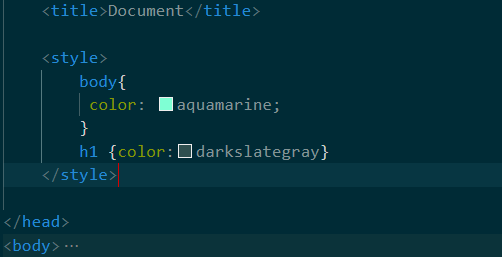
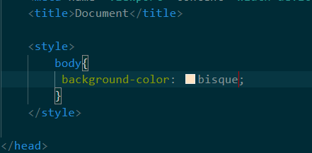
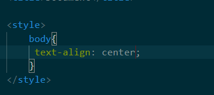

Sometimes, you'll want your website to look more pleasing on the eyes.
So on this page, you'll learn how to use style codes to make your website look better.
Before you start this lesson, make sure you already have a HTML file that you've created ready, like the file you would have created in Part 1. If you need help making these files, head to Part 1 to learn how to create a HTML file.
In order to go to Part 1, all you need to do is click Pt_1 on the top of the page, second on the nav bar.
This file should be set up, ready for code. If you need help setting the file up, head to Part 2 to set the file up.
In order to go to Part 2, all you need to do is click Pt_2 on the top of the page, third on the nav bar.
When you're working on your website, you'll need to know how to open it onto your web browser. If you need help opening your website in a web browser, head to Part 2.
Once you have finished, you may continue onwards.
First, make sure that you're writing within the space between 'head' and '/head'. Since this lesson is only about styles in particular, we'll only need to write in that space.
To begin, type 'style'(Remember to type it inbetween < and >). You should notice that the program has automatically added on '/style' to your code.
Within the style codes, you'll place everything that involves visual aspects on the website within there. This will include the Css nav bar that you would have created in Step 5.
Within the style codes, you can also use code to change the colour of your text.
This can be with the code 'color:' said colour ';' within the style codes. You can also specify which colour certain text types should be by typing that text type, for example h1, along with a pair of curly brackets containing the earlier code within.
It's also possible to control all the code within the body by typing 'body{}'. Using this code allows you to change all the text within the body to a certain colour without needing to specify each text type.
It's also possible to change the colour of the background to a different one.
By typing 'background-color:' said colour ';' within the space between the curly bracketed body, you are able to change the colour of the background to something different.
place text in side or side or centre
There's also a code that lets you change the placement of the text.
If you type 'text-align:' left (can also be right or centre) ';' within the space between the curly bracketed body, you can easily adjust the placement of the text.
Once you're done, you'll have a more colourful or/and neater website, further pleasing the user.
This is the last step for the 'How to create a website using HTML' website. I hope you found the guide useful and simple to work with. For more codes, head to W3schools. Thank you for using this guide.